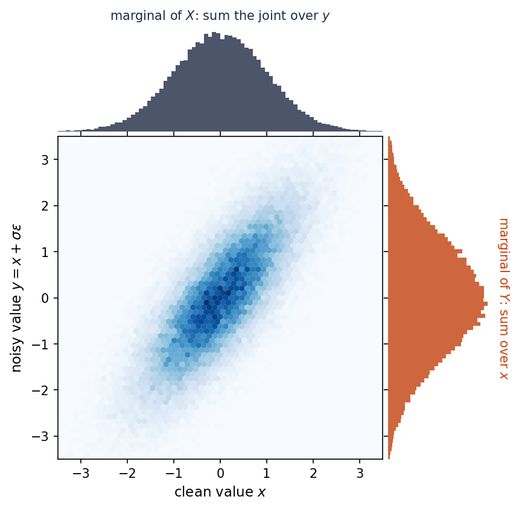
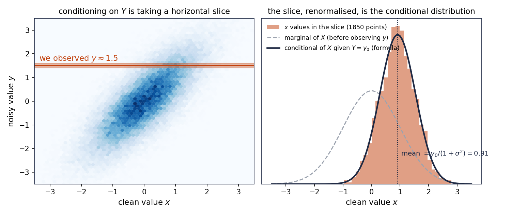

2. Joint, marginal and conditional distributions¶
Part I: Probability foundations. Essential for latent-variable models.
Prerequisites: note 1.
Intuition¶
Note 1 looked at one random variable at a time. Almost everything in this series involves at least two at once: a data point and its latent code, a clean image and a noisy copy of it, the state of the forward process at two different times. Whenever two random variables come from the same experiment, there are three kinds of questions we can ask.
- How do they behave together? That is the joint distribution.
- How does one behave if we ignore the other? That is a marginal distribution.
- How does one behave once we know the other? That is a conditional distribution.
The example we carry through this note is a clean value and a noisy copy of it. We do it twice: once with a single bit that gets flipped now and then, and once with a number that gets Gaussian noise added. Both are miniature versions of the forward process of a diffusion model. The third question, asked in the direction "given the noisy copy, what was the clean value?", is exactly the question a denoiser answers. So this is the note where the reverse direction of a diffusion model appears for the first time, small enough to compute by hand.
Math¶
Joint distribution¶
Take two random variables \(X\) and \(Y\) defined on the same sample space. Put them side by side and you get a single random variable \((X, Y)\) whose values are pairs. Its distribution, in the sense of note 1, is called the joint distribution of \(X\) and \(Y\). It answers questions of the form "how likely is it that \(X\) lands in \(A\) and \(Y\) lands in \(B\)?"
Example (a noisy bit). Someone sends a bit \(X\), equally likely to be \(0\) or \(1\). It travels over a bad wire and arrives as \(Y\). With probability \(0.8\) it arrives intact, with probability \(0.2\) it is flipped. There are four possible pairs, and here is how likely each one is:
| \(Y = 0\) | \(Y = 1\) | |
|---|---|---|
| \(X = 0\) | \(0.40\) | \(0.10\) |
| \(X = 1\) | \(0.10\) | \(0.40\) |
The top-left entry, for instance, is "a \(0\) was sent and arrived intact": half the time a \(0\) is sent, and of those times \(0.8\) arrive intact, so \(0.5 \times 0.8 = 0.40\). The four entries add up to \(1\). This table is the joint distribution.
Definition 2.1 (Joint distribution)
For discrete \(X\) and \(Y\), the joint probability mass function is
For continuous \(X\) and \(Y\), the joint density is a function \(p_{X,Y}(x, y) \ge 0\) such that for any region \(R\) of pairs
Example (a noisy number). Let \(X \sim \N(0, 1)\) be the clean value, and let \(Y = X + \sigma\varepsilon\), where \(\varepsilon \sim \N(0, 1)\) is fresh noise, independent of \(X\), and \(\sigma\) sets how noisy the copy is. The joint density is a hill over the plane, stretched along the diagonal because a large \(x\) tends to come with a large \(y\).

Notation from here on. Writing \(p_{X,Y}(x, y)\) and \(p_X(x)\) gets heavy. Like every paper in this field, we drop the subscripts and write \(p(x, y)\), \(p(x)\), \(p(y)\). The letter inside the brackets tells you which variable is meant. It is sloppy but universal, and after this note you will not notice it.
Marginal distribution¶
Suppose you have the joint distribution but only care about \(X\). Then for each value of \(X\), add up the probabilities of all the pairs that have that value, whatever \(Y\) did. The result is the distribution of \(X\) on its own. It is called the marginal distribution because, in a table, it is the row total written in the margin.
| \(Y = 0\) | \(Y = 1\) | total | |
|---|---|---|---|
| \(X = 0\) | \(0.40\) | \(0.10\) | \(0.50\) |
| \(X = 1\) | \(0.10\) | \(0.40\) | \(0.50\) |
| total | \(0.50\) | \(0.50\) | \(1\) |
The row totals are the marginal of \(X\): it was a fair bit, as we knew. The column totals are the marginal of \(Y\): the received bit is also equally likely to be \(0\) or \(1\), which is less obvious but follows from the symmetry.
Definition 2.2 (Marginal distribution)
The marginal of \(X\) is obtained from the joint by summing or integrating out \(Y\):
Likewise \(p(y) = \sum_x p(x, y)\) or \(\int p(x, y)\, \d x\).
In the figure above, the two histograms on the sides are the marginals of the noisy-number example. The marginal of \(Y\) is visibly wider than the marginal of \(X\): adding noise spreads things out. We will compute exactly how much in note 4.
Two places where marginals will matter to us.
- The noisy distribution of a diffusion model is a marginal. The forward process defines the pair (clean, noisy) by "take a data point and add noise". The distribution of the noisy point on its own is the marginal over the clean point. That is what the aside at the end of note 1 computed.
- The likelihood of a latent-variable model is a marginal. A model with a latent code \(z\) defines a joint \(p(x, z)\). The probability it assigns to an observed data point \(x\) is \(p(x) = \int p(x, z)\, \d z\). In Part III this integral will be the thing we cannot compute, and the ELBO will be the way around it.
Conditional distribution¶
Now suppose you learn the value of \(Y\). Say the wire delivered \(Y = 1\). What should you now believe about \(X\)?
Go to the column \(Y = 1\) of the table. Only two pairs are still possible: \((0, 1)\) with probability \(0.10\) and \((1, 1)\) with probability \(0.40\). These numbers describe the right relative chances but add up to \(0.50\), not \(1\), because we have thrown away the other column. So divide by \(0.50\):
Given that a \(1\) arrived, a \(1\) was sent with probability \(0.8\). That is the conditional distribution of \(X\) given \(Y = 1\). The recipe is always the same: restrict the joint to the slice where \(Y\) has the observed value, then rescale the slice so it adds up to one.
Definition 2.3 (Conditional distribution)
For any value \(y\) with \(p(y) > 0\), the conditional distribution of \(X\) given \(Y = y\) is
The same formula, with densities, defines the conditional density in the continuous case. The rescaling by \(p(y)\) is exactly what makes \(p(x \mid y)\) add up (or integrate) to one over \(x\).
In the continuous case the "slice" is literal. Here is the noisy-number example after observing \(y \approx 1.5\).

On the left, the horizontal band is the slice of the joint at the observed value. On the right, the histogram of the \(x\)-values that fall in that band is the conditional distribution of the clean value. Before observing \(y\), our belief about \(X\) was the wide dashed curve centred at \(0\). After observing \(y = 1.5\), it is the narrow solid curve centred near \(0.9\). Knowing the noisy copy moved our guess and tightened it. Note 4 works out the formula for the solid curve.
Keep in mind. \(p(x \mid y)\) is a distribution over \(x\). The \(y\) is a fixed parameter that selects which distribution over \(x\) we are talking about. Change \(y\) and you get a different distribution over \(x\). Read as a function of \(y\) with \(x\) fixed, it is not a distribution at all: it need not integrate to one in \(y\). This is a common trap when reading formulas later, so it is worth saying once.
Two directions. There are two conditionals, \(p(y \mid x)\) and \(p(x \mid y)\), and they are different objects. In both our examples, \(p(y \mid x)\) is the noising rule: given the clean value, how the noisy copy is produced. We wrote it down first, by construction. The other direction, \(p(x \mid y)\), is the denoising question: given the noisy copy, what was the clean value. Nobody handed it to us; we had to compute it from the table. Turning the first into the second is what Bayes' rule does, and it gets its own note (note 5). For now the definition above is all we need.
Independence¶
Sometimes knowing \(Y\) tells you nothing at all about \(X\): the slice looks the same whichever \(y\) you pick. Then \(X\) and \(Y\) are independent.
Definition 2.4 (Independence)
\(X\) and \(Y\) are independent if \(p(x \mid y) = p(x)\) for every \(y\), or equivalently
Example. In the noisy-number setup, the fresh noise \(\varepsilon\) is independent of the clean value \(X\). That is an assumption we made, and every forward process in this series makes it: the noise added at each step is drawn without looking at the data. Non-example. \(X\) and \(Y = X + \sigma\varepsilon\) are certainly not independent. The slices in the figure above change as you move \(y\).
Chain rule¶
We filled in the noisy-bit table by multiplying "how likely is this clean value" by "given that clean value, how likely is this noisy one". That is a general fact, and it is just Definition 2.3 read backwards.
Proposition 2.5 (Chain rule)
For more variables, keep going: \(p(x_0, x_1, x_2) = p(x_0)\, p(x_1 \mid x_0)\, p(x_2 \mid x_0, x_1)\), and so on.
The chain rule is how joints get built in practice. Nobody writes down a joint distribution over an image and all of its noisy versions directly. Instead one writes: start with a clean image, \(p(x_0)\); add a little noise, \(p(x_1 \mid x_0)\); add a little more, \(p(x_2 \mid x_1)\); and so on for \(T\) steps. The product of those factors is the joint distribution of the whole forward process. That construction, with the simplification that each step only looks at the previous one, is the subject of note 18.
Derivation¶
The noisy bit, all the way through¶
We have the joint table and both marginals. Here are both conditionals.
Noising direction, \(p(y \mid x)\): divide each row by its total. Given \(X = 0\), the received bit is \(0\) with probability \(0.40 / 0.50 = 0.8\) and \(1\) with probability \(0.2\). Same for \(X = 1\). This just recovers the wire's rule, as it should.
Denoising direction, \(p(x \mid y)\): divide each column by its total. Given \(Y = 1\): \(X = 1\) with probability \(0.8\), \(X = 0\) with probability \(0.2\). Given \(Y = 0\): \(X = 0\) with probability \(0.8\). So the best guess is "believe the wire", and it is right \(80\%\) of the time.
Now change one thing: suppose \(1\)s are far more common than \(0\)s, say \(P(X = 1) = 0.9\). The wire is the same. Rebuild the table with the chain rule:
| \(Y = 0\) | \(Y = 1\) | total | |
|---|---|---|---|
| \(X = 0\) | \(0.1 \times 0.8 = 0.08\) | \(0.1 \times 0.2 = 0.02\) | \(0.10\) |
| \(X = 1\) | \(0.9 \times 0.2 = 0.18\) | \(0.9 \times 0.8 = 0.72\) | \(0.90\) |
| total | \(0.26\) | \(0.74\) | \(1\) |
Suppose a \(0\) arrives. Slice the column \(Y = 0\) and rescale by \(0.26\):
Even though the wire said \(0\), the sent bit was more likely a \(1\). The wire is right \(80\%\) of the time, but \(1\)s are so common that "a \(1\) got flipped" is a better explanation of a received \(0\) than "a \(0\) was sent". The best denoiser does not simply trust the observation; it weighs the observation against what was likely in the first place. Hold on to this. In Part IV a neural network will be trained to do exactly this for images.
Code¶
Conditioning empirically is slicing: keep the samples whose \(y\) lies in a thin band around the observed value and look at their \(x\). The code below does that for the noisy-number example and compares the slice's mean and variance with the exact answer. The function denoiser holds that exact answer; where it comes from is worked out in note 4, where Gaussians get their proper treatment.
"""Note 2: the joint distribution of a clean value X and its noisy version Y = X + sigma * eps.
Conditioning on Y is a slice through the joint. The conditional mean of X given Y = y is the
best guess of the clean value from the noisy one: a denoiser.
"""
import numpy as np
def sample_clean_noisy(n: int, sigma: float, rng: np.random.Generator) -> tuple[np.ndarray, np.ndarray]:
"""Draw n pairs (x, y) with X ~ N(0, 1) and Y = X + sigma * eps, eps ~ N(0, 1) independent of X."""
x = rng.standard_normal(n)
y = x + sigma * rng.standard_normal(n)
return x, y
def conditional_slice(x: np.ndarray, y: np.ndarray, y0: float, width: float = 0.1) -> np.ndarray:
"""The x-values of all pairs whose y lies within `width` of y0: an empirical sample from X given Y ~ y0."""
return x[np.abs(y - y0) < width]
def denoiser(y: np.ndarray, sigma: float) -> np.ndarray:
"""E[X | Y = y] for the Gaussian example: shrink the noisy value toward 0 by the factor 1/(1+sigma^2)."""
return y / (1.0 + sigma**2)
if __name__ == "__main__":
rng = np.random.default_rng(0)
sigma, y0 = 0.8, 1.5
x, y = sample_clean_noisy(200_000, sigma, rng)
xs = conditional_slice(x, y, y0)
print(f"given Y ~ {y0}: empirical mean of X = {xs.mean():.3f}, formula y/(1+sigma^2) = {denoiser(y0, sigma):.3f}")
print(f" empirical var of X = {xs.var():.3f}, formula sigma^2/(1+sigma^2) = {sigma**2/(1+sigma**2):.3f}")
Running it prints the empirical and exact values side by side; they agree to two decimals with two hundred thousand samples. The slice is how the conditional histogram in the figures above was made.
Connection forward¶
- Note 3 introduces expectation. The denoiser \(\E[X \mid Y = y]\) will be shown to be the best guess in the least-squares sense, which is why it, and not some other summary of the conditional, is what networks are trained to output.
- Note 4 does the completing-the-square computation once and for all, in several dimensions and with matrices, so we never do it by hand again.
- Note 5 is Bayes' rule: the formula \(p(x \mid y) = p(y \mid x)\, p(x) / p(y)\) that turns the noising direction into the denoising direction, which we did here by slicing a table.
- Notes 13 to 15: the marginal \(p(x) = \int p(x, z)\, \d z\) of a latent-variable model, and why we bound it instead of computing it.
- Note 18 builds the forward process with the chain rule, one noising step at a time.
- Note 20 defines the reverse process as the conditional \(p(x_{t-1} \mid x_t)\), and note 23 shows the network's target is the conditional mean of the clean image given the noisy one.